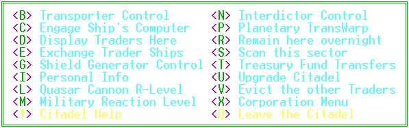

|
Citadel
Command Menu |
|

 Planet
Command Menu
Planet
Command Menu
|
 Navigation
Console
Navigation
Console
|
 Corporate
Command Menu
Corporate
Command Menu
|


 Citadel
Commands
Citadel
Commands
<B>
Transporter Control
Here is where you
go to beam you and your ship to another sector. The transporter range
is limited, but with enough credits, you can also use this option to upgrade
it's range.
<C>
Engage Ship's Computer
Use this function
to use all your Crai's power just as you would by choosing <C>
from the Main Menu.
<D>
Display Traders Here
This will show you
the guest register of the other players who are parked in the Citadel.
The register gives you the name of the player, their ship type and how
many fighters, shields and holds they have. This information could
prove very useful if you have just captured the planet from one of your
opponents.
<E>
Exchange Trader Ships
If the other players
parked in the Citadel have specified their vehicle as available for trade,
then you have the option of exchanging your ship for theirs. Be sure
to coordinate this carefully with the other members of your corporation.
Only C.E.O.'s can use Corporate Flagships so they are not available for
trade. If you have seized this planet from an opponent still parked
in the Citadel, you may want to commandeer his ship for your own use.
<G>
Shield Generator Control
If you have your level
5 Citadel completed, you can use this option to store your shields.
You transfer your Ship's shields to the Planetary Shielding System using
this option (10 ship shields = 1 planetary shield). Stored shields
will be used in the defense of your planet. The Planetary Shielding
System will protect your planet from your enemies. You will thwart
your rivals' attempts to incapacitate your defenses with Photon Missiles.
Your opponents will be unable to scan your planet.
<I>
Personal Info
This selection will
enable you to see all of your current statistics. The information
will display same as it does when you choose option <I>
from the Main Menu.
<L>
Quasar Cannon R-level
Use this option to
set both the Atmospheric and Sector reaction levels. The Quasar Cannon
in your Level Three Citadel uses massive amounts of Fuel Ore. Use
this option to adjust the percentage of Ore on the planet used in this
weapon's capability. PLEASE NOTE: The Quasar Cannon will use the
entered percentage of Fuel Ore remaining on the planet for EACH SHOT it
fires. If you set the Sector value to 100% and a Scout Marauder with
5 fighters wanders into your sector, the Cannon will use all the Fuel Ore
on your planet to blow the intruder into space dust. If another player
later tramps into your sector in a well-armed BattleShip your Cannon will
sit idle due to lack of ammunition. Another consideration when setting
your percentages is that the accuracy of the Cannon is much better and
the damage caused by the blast is greater when the target is in the planet's
atmosphere.
<M>
Military Reaction Level
Another method of
customizing your protection, this will let you set the percentage of fighters
stationed there to be used as offensive or defensive in case of an attack
on the planet. You must have a Combat Control Computer (Level Two
Citadel or higher) to use this option. The value you enter will be
the percentage of fighters that will attack offensively as someone attempts
to land on your planet. The balance of your fighters will fall back
for defense of the planet and Citadel.
<N>
Interdictor Control
If you have upgraded
your citadel to level 6, this will allow you to control the Interdictor
generator on the planet. You will want to use this in
conjunction with a Quasar Cannon. If the generator is on, an enemy
ship cannot leave the sector. This generator consumes a lot of fuel
ore when used. Make sure your Q-cannon is set most carefully.
Otherwise, the enemy can try to escape and deplete all the fuel ore on
your planet.
<P>
Planetary TransWarp
The instructions for
this feature are in your Level Four Citadel. Provided you have enough
Fuel Ore to power the mammoth engine, you can move your planet to any sector
where you currently have fighters stationed.
<R>
Remain Here Overnight
You can sleep feeling
safe and secure if you bed down inside the Citadel, out of the rat race.
You will have the protection of your planetary forces to guard you.
When you leave your ship, the valet will ask if you want others who enter
the Citadel to have the privilege of exchanging ships with you. It's
perfectly within your rights to keep your ship for personal use only.
<S>
Scan This Sector
This option will let
you see everything in the sector around this planet. The display
will be the same as you get from option <D>
in the Main Menu.
<T>
Treasury Fund Transfers
If you don't like
to carry a lot of credits on you when you're out exploring the universe,
you can deposit your excess in the Citadel. You can withdraw the
credits whenever you need them. Be advised that the Treasury workers
are quite lax in their security measures and anyone who enters the Citadel
can withdraw any and all of the credits.
<U>
Upgrade Citadel
Once your Citadel
construction is complete, you may find you wish to upgrade. Very
few people are content with a Level One Citadel. You will need more
colonists and materials for each level of improvements. Level Two
has a Combat Control System which enables you to set the fighters deployed
on the planet as offensive or defensive. Level Three contains a Quasar
Cannon which is a very powerful weapon, but uses a considerable amount
of Fuel Ore to operate. Level Four encloses the massive engine used
for the TransWarp Drive. Level Five provides the power for the Planetary
Shielding System. The PSS will provide a sturdy shield for your planet
which your enemies will have a hard time penetrating with fighters or photon
missiles. Level 6 equips the planet with an Interdictor Generator.
If turned on, this generator will make it impossible for your enemy to
escape from your Quasar Cannon.
<V>
Evict Other Traders
Now that you've survived
all the defenses your opponent placed to keep you out, you should be able
to come in and take over, right? Occasionally you go into a newly
captured Citadel only to find the trader (or traders) who previously controlled
the planet. No need to have them in your way. Simply select this
option to activate the Emergency Warning System in the Citadel. It
will alert these unwanted guests to some impending doom and their ships
will blast off into orbit around the planet. The system will list
the traders as they escape. You then may either stay in the Citadel
out of harm's way or you can go out into the sector to inflict more damage
on your enemy.
<X>
Corporation Menu
This option is the
same as option <T> from the
Main Menu.
<!>
Citadel Help
Display the portion
of the documentation describing the Citadel functions.
<Q>
Leave the Citadel
Exit the Citadel and
return to the planet.
|
Planet
Command Menu
|
 Exit
Help
Exit
Help
|
Corporate
Command Menu
|